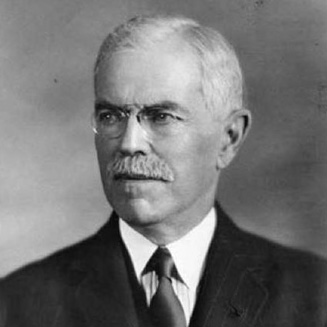
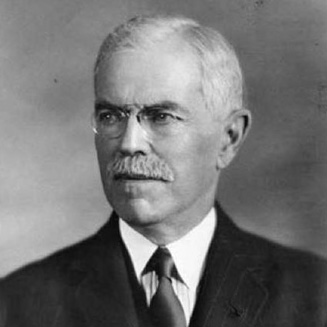

"Education is the ability to meet life's situations"
- John G Hibben

"The great aim of education is not knowledge, but action"
- Herbert Spencer
- John G Hibben
- Herbert Spencer
We, the teachers, will consider our ability to sustain the enthusiasm of our children the greatest asset we are trying to possess
The way to develop the best that is in a child is by appreciation and encouragement from parents and teachers
There is nothing else that so kills the creativity of a child as criticism from parents and teachers
We, the teachers, will try to learn never to criticize the children
We will develop our belief in giving children incentive to learn
So, we will be anxious to praise and loath to find fault in our children
If we like anything a child does we will be hearty in our approbation and lavish in our praise
(Adapted from Charles Schwab’s statement by P K Dash)
The illiterates of the 21st century will not be those who do not know how to read and write but those who cannot “learn”, “unlearn” and “relearn”.
By Alvin Toffler
Teachers have come to our school having learnt how to teach. Here they are now trying to unlearn and Relearn how to make a child Want to learn. Thus, the Future Citizen of the World-School is, in reality, an institution for educating teachers. Teachers here learn while teaching children.
We are encouraging the teachers here to constantly remind themselves the following:
“One cannot teach a child anything. One can only help the child to learn”
Therefore, the role of parents and teachers must become that of a gardener
“A gardener does not grow any plant in the garden. He only creates conditions for the plants to grow. He knows each plant needs a different conditioning”
We wonder “If the parents and teachers become successful in keeping the children foolish and hungry, who knows each one of them may become a Steve Jobs (founder of Apple Computer).

- Dr. John G Hibben
- Herbert Spencer
(Herbert Spencer book has been translated in Bengali by Swami Vivekananda)
Keeping these two great ideas in mind. We, at the Future Citizen of the World-School, are trying to figure out what the education system in our Pre-School should be.
The Current education system is based on the idea of academic ability (measured by percentage of marks). This percentage of marks dominates parent’s view of intelligence of their children.
Parents and everybody else in a society think that when a person gets a Bachelor’s Degree, a Master’s Degree or a PhD degree, she/he is now educated. In reality she/he is only a degree holder now.
Our education system punishes a student if he/she is caught copying in the examination.
But the same system vigorously encourages the students to “COPY” the information on to the memory chip in their brain and recopy on to the exam paper. One even gets a gold medal for doing this extraordinarily well.
Dear Parents! Will it be a good idea “that all forms of copying must be eliminated from the examination system” What about an “Open Book Examination” System?
In our society and in the minds of parents, educational degree has become an “end” in itself. When their children get degrees in an area where there is demand in the Job-Market, they will get jobs easily and their parents feel that the aim of their children’s lives is beginning to take shape.
A child who loves dancing and hates mathematics is forced to join an engineering course because there are not many jobs in the field of dancing.
A child who enjoys playing with gadgets is forced to study IT because IT jobs are more easily available.
Only the society and the government are in a position to create an environment where a student of “Bharat Natyam” will get a job, a student of hockey will get a job and so on.
Then and only then the education system will get automatically modified to mean:
“Education is a means to an end objective of every person”
These thoughts have motivated us to start our journey in a humble way by setting up this pre-school learning institution.
THE KEY TO OUR PRE-SCHOOL EDUCATION IS “LEARN HOW TO MAKE A CHILD ‘WANT’ TO LEARN”
Parents and Grand Parents!
Let us put our minds together to make this happen. It is your school. We are only running it.
Let us not try to make our child to agree with us. Let us put our heart and soul to learn how to make our child “WANT” to agree with us.
Praise is the sun-shine to the spirit of a child. A child cannot grow and flower without praise from parents and teachers.
470, 3rd Cross Rd,
HMT Layout, Anandnagar,
Hebbal, Bengaluru,
Karnataka 560024
Email: futurecitizenoftheworld@gmail.com
Phone: 09620536251